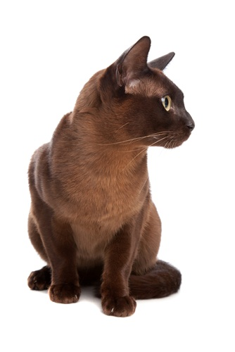

ศุภลักษณ์

คำอธิบาย:ลักษณะเด่นลักษณะเด่น: มีขนเป็น สีน้ำตาลทองแดงหรือสีทองแดงเข้มเงางามสม่ำเสมอทั่วตัว หนวดมีสีคล้ายลวดทองแดง ดวงตามีสีเหลืองอำพันประกายสดใสความเชื่อโบราณ: ชื่อมีความหมายถึง "ลักษณะที่ดีงาม" เชื่อว่าเป็นแมวแห่งโชคลาภ บารมี และความร่ำรวย ช่วยส่งเสริมเรื่องเมตตามหานิยม เลี้ยงแล้วจะมีคนรักใคร่เอ็นดูและค้าขายดี